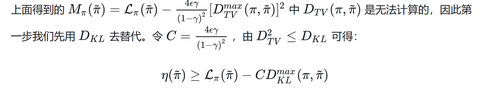

TRPO
TRPO
Background
在进入TRPO和PPO（两者同根生），我们先从自然梯度法（Natural gradient）引入信赖领域（proximal region）的概念。假设我们要求解的是某个概率分布，那么一节梯度下降法本质就是对进行一阶展开：
但是直接这样粗暴的更新会带来问题：
- 参数空间的微小变动，会导致策略分布大幅度变化，让优化不稳定。
- 参数空间对策略分布的影响不一样，有些参数对策略分布的影响大，有些参数对策略分布的影响小，这样会导致优化效率低下。
于是我们放弃使用参数空间作为优化的“步长”，转而到中。我们用KL散度来衡量两个分布之间的差异，我们把策略空间用KL散度衡量的距离作为邻域。
TRPO - 策略优化
我们的优化目标：
我们希望这个优化目标可以有稳定的提升。
这里我们用差增量的形式表示出优化前后的区别，其中是旧策略的优势函数，具体证明将A的定义式展开即可。
我们继续把上式变形：
其中是新策略大量采样后得到的数据集。我们的目的是找一个更好的新策略，显然对每一个可能得新策略有要做采样是不现实的。于是希望能用替代，即求解一个proxy代理:
我们通过先近似，再用importance sampling技术，现在只用在dataset抽样的数据上进行优化。
下面先引入下界代理法(minorization-maximization (MM) algorithm)。
如果函数f很难优化，构造新函数g，满足：
- 容易优化
那么我们可以通过优化g，确保f至少不变差。
于是我们现在希望可以说明当在附近一个足够小的信赖邻域(即KL散度小于一个接近0的数)，此时能视作的一个下界近似。
这里具体的bound是什么呢，数学内容暂时略过：
TRPO - practical algorithm

但到这一步，还是没法算（因为状态无限），所以我们用均值去近似最大值（和足够接近时，mean和max也接近）。
最后对进行变换：
二到三行去掉的原因，是我们不需要得到一个真正的discounted-MDP，而是只用一个"局部视角的discount-MDP"，相当于把一个轨迹看成若干个后缀轨迹，全部都是从当前状态开始的。我们认为这样近似是target-based的。
最后一行使用了Importance Sampling，从而把抽样问题转成了在旧数据库里大量抽样（中的样本，可以更新多次，实际一般设置为2次）。TRPO其实不单单是提升了样本效率，根据前面的分析，其还提升了训练的稳定性(和单增性)。
这里带约数求解过程使用了KKT条件和Hession free的共轭梯度法，具体可以参考下图：
补充：
关于TRPO的介绍到此终于结束了。总结一下，TRPO算法首先从Policy Improvement的角度找到了一个方便求解的Proxy，然后证明了该Proxy在满足信赖邻域条件时能够近似的下界，最后采用多步启发式近似获得了一个实际可以求解的优化目标，该优化目标使用二阶梯度方法进行求解。
最后总结一下思路因果链：
-
我们希望对策略梯度下降优化，但是空间与策略的黎曼空间不一致，导致对的欧式空间的梯度优化在策略表现上会很怪。
-
TRPO分别在目标函数和梯度更新两方面做了改进：
梯度更新方面的改进
TRPO基于Natural Policy Gradient (即用KL divergence约束policy，避免policy剧烈迭代)，做了以下两点改进：
第一点，为避免求解复杂的Fisher/Hessian逆运算，使用了conjugate gradient
第二点，将学习率换成 α^j * NPG原始的学习率，α∈(0,1)，由大至小线性搜索使目标函数大于0 (即本次迭代比上次好)，且符合KL divergence 的最小整数j值 (防止泰勒展开带来的误差)目标函数方面的改进
在目标函数中引入Importance Sampling，提升了sample efficiency (原来每次采样完后只能更i性能一次梯度就把样本扔掉。引入IS后，可以多次使用θ’采样得的数据更新θ，即使用一批数据进行多次gradient ascent)。还有一点有意思的是，作者将新的expeted disconted reward拆成了两部分，即旧的reward+某一部分。思想是，如果，理想情况下，"某一部分"恒为正，则reward是单调不减的，即每次策略都比之前的好。
这之外还有一点特殊的，在推导surrogate function的过程中，作者使用了MM算法，即找了目标函数的下界作为surrogate function。
-
剩下的点是对2的补充说明。
-
为了充分利用数据（避免新的策略需要采样才能知道其好坏），我们先后使用MM（minorization-maximization）算法和IS（importance sampling）技术，将优化目标转化为在旧数据集上的优化。经过一些列的近似和推导，我们得到了一个可以在旧数据集上优化的目标函数。（就是之前讲过关于Advantage Function的那个目标函数）
-
优化梯度方面，同样可以算出4提出来的优化目标，和KL散度的限制条件，尝试用fisher信息矩阵近似KL散度，从而利用KTT等条件，得到了自然梯度下降的优化目标。
-
但是计算FIM的逆是困难的（参数太大，矩阵太大），我们利用Hessian-free的共轭梯度方法，解决的矩阵product向量的问题。
-
这样就把TRPO所有的思路串起来了！
实验结果
后记
TRPO&&PPO梳理 这个补充了各种各样的小知识点，很赞。
Gradient Descent&&Newton’s Method&&Conjugate Gradient&&Hessian-Free Optimization：从梯度下降讲到Hessian-free优化，补充数学知识。
从梯度下降到Hessian-Free优化：上一篇的中文译本。
rollout算法：sampling策略的不同。
最基本的结论是：对于两个概率分布，KL-散度衡量了两个概率分布之间的差异，Fisher信息矩阵（FIM）是KL-散度的二阶近似，实际定义了概率分布空间上局部曲率。
费舍尔信息矩阵:黎曼空间与黎曼流形,海森矩阵、费舍尔信息矩阵和 KL 散度。非常数学理性地探讨了这些复杂概率中的数学关系。
信息论概念详细梳理：数学知识储备。